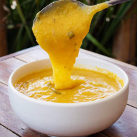
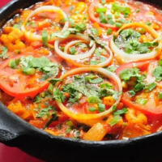
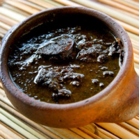
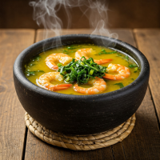
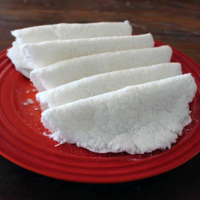
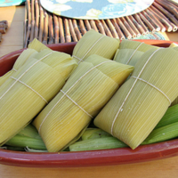
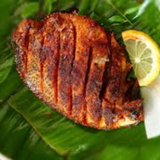
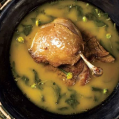
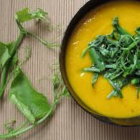
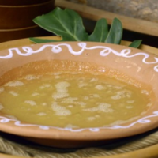

Explore a diversidade da culinária indígena brasileira e conheça preparos tradicionais
que atravessam gerações, preservando sabores, técnicas e saberes ancestrais.

Pirão
Creme feito com caldo de peixe e farinha de mandioca, muito comum na culinária brasileira.

Moqueca
Ensopado de peixe preparado com temperos e cozido lentamente.

Maniçoba
Prato feito com folhas de mandioca cozidas por dias e diferentes carnes.

Tacacá
Caldo quente amazônico com tucupi, jambu e camarão seco.

Beiju
Tipo de pão ou panqueca feito com goma de mandioca.

Pamonha
Massa de milho verde cozida dentro da própria palha.

Peixes assados
Peixe temperado e assado, geralmente servido com ervas e limão.

Pato no tucupi
Prato amazônico com pato cozido em molho de tucupi e jambu.

Buré
Prato indígena feito com mandioca e peixe.

Poheu
Bolinho ou massa feita com ingredientes típicos da culinária indígena.
Fale Conosco
Entre em contato conosco para tirar dúvidas, compartilhar conhecimentos ou saber mais sobre a riqueza da culinária indígena, contribuindo para a valorização e preservação dessas tradições tão importantes para nossa história.